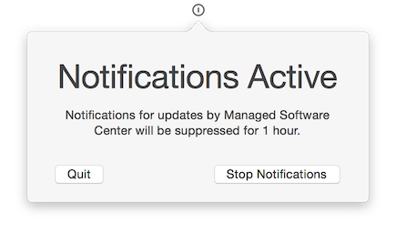
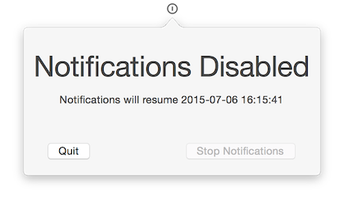

I’ve been wanting to get stuck in with a simple Swift project for a while, but couldn’t think of anything suitable for a first project (Imagr was originally going to be that project, but I don’t think it would ever have been made if I chose Swift), until I saw Dr Graham R Pugh’s Do Not Disturb application. I thought it was an excellent idea that could be made even better by being a manu bar app.

Enter Munki DND – it extends Graham’s idea by allowing the administrator to configure the number of hours the user is allowed to suppress notifications for, as well as living in the menu bar so the user can check how long they’ve got until notifications become active again.
